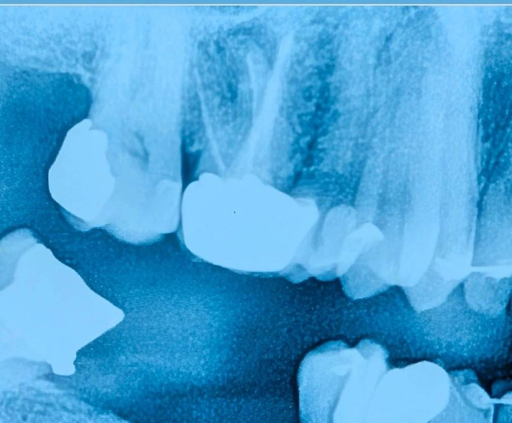

بیمار برای طرح درمان دندان ۶ بالا سمت راست مراجعه کرده بود. این دندان دارای روکش بود و در عین حال شواهدی از مشکلات زیرین—از جمله نیاز به درمان مجدد ریشه—وجود داشت.
در نگاه اول ممکن است مسیر درمان مشخص به نظر برسد؛ درمان ریشه، بیلدآپ و روکش جدید.
اما سؤال اصلی اینجاست:
آیا واقعاً میدانیم با چه دندانی طرف هستیم؟
در چنین شرایطی، نهتنها روکش موجود میتواند وضعیت واقعی دندان را پنهان کند،
بلکه پس از برداشت روکش نیز پوسیدگیهای زیرین ممکن است تصویری نادرست از میزان نسج باقیمانده ایجاد کنند.
گاهی پوسیدگی اجازه نمیدهد تشخیص دهیم چه مقدار از ساختار دندان سالم و قابل اتکا است؛
و تصمیمگیری بدون حذف کامل این پوسیدگیها صرفاً تصمیمی بر پایهٔ یک ارزیابی ناقص خواهد بود.
در این کیس، پیش از هر تصمیم قطعی، روکش قدیمی خارج شد و تمام پوسیدگیها و ترمیمهای قبلی بهطور کامل حذف شدند.
این مرحله یک اکسپوژر واقعی از وضعیت دندان ایجاد میکند.
در این مرحله میتوان دقیقتر ارزیابی کرد که:
چه میزان نسج سالم باقی مانده است، آیا فرول قابل قبول وجود دارد، و اساساً آیا این دندان ارزش ورود به یک مسیر درمانی چندمرحلهای را دارد یا نه.
در صورت نیاز، پس از این اکسپوژر واقعی تصویربرداری مجدد انجام میشود تا ارزیابی دقیقتری از وضعیت ریشه و ساختار باقیمانده به دست آید.
در این نقطه است که پروگنوز واقعی مشخص میشود؛
و تصمیمگیری—حفظ یا جایگزینی— بر پایهٔ واقعیت، نه حدس انجام میگیرد.
این رویکرد از انجام درمانهای غیرضروری و صرف هزینه برای دندانی با پیشآگهی ضعیف جلوگیری میکند.
این کیس یادآوری میکند که در موارد غیرشفاف، تنها برداشتن روکش کافی نیست؛
حذف کامل پوسیدگی است که تصویر واقعی را آشکار میکند.
گاهی تشخیص، از دلِ برداشتن لایههایی به دست میآید که حقیقت را پنهان کردهاند.